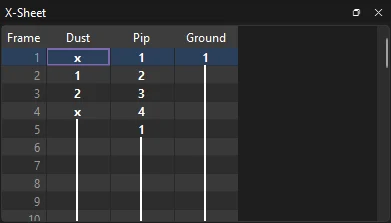
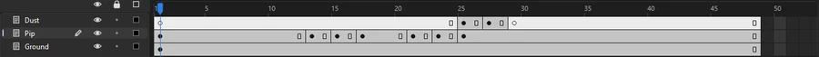

Tutorials
Timing with the X-sheet
Time a hop by typing drawing numbers into the X-sheet: hold a pose, put the motion on twos, reuse drawings on the way down and end a puff of dust with a blank.
This page is also a lesson inside Phoenix: choose and start Timing with the X-sheet, and Phoenix points at each control as you go. It takes about 8 minutes.
To follow along here instead, download the starting document, x-sheet.fla, and open it with .
On paper, animators time a scene on an exposure sheet, or X-sheet: a column for each layer, a row for each frame, and in each cell the number of the drawing shown there. Phoenix has one too, and you can type the timing straight into it.
Pip, the orange creature, has four drawings: sitting, crouched, stretched up and at the top of a hop. They sit one per frame at the start of the Pip layer, like a page of drawings. The Dust layer has two puffs of dust. You will time them into a hop with some weight to it.
1. Play it
Press Enter, or click the play button in the timeline header. Pip flickers through all four drawings in a sixth of a second, then just sits.
2. Open the X-sheet
Press Enter again to stop. Choose .
3. Read the sheet
Each layer is a column: Dust, Pip and Ground. Each row is a frame, numbered down the left. A bold number starts a drawing, and the line below it means that drawing holds. An x means nothing shows.
The X-sheet numbers each layer's drawings in the order they first appear. Pip's are 1 sitting, 2 crouched, 3 stretched and 4 at the top; row 5 shows drawing 1 again, held to the end. The dust puffs are 1 and 2.

4. Hold the first pose
Pip should sit still for half a second before the hop: 12 frames at 24 frames per second. Scroll down the X-Sheet and click the Pip cell in row 13. Type 2 and press Enter.
Row 13 is now a keyframe showing drawing 2, Pip crouched, and the cursor steps down to row 14.
5. Up, on twos
On twos, each drawing holds for two frames. Row 14 should keep drawing 2, so press Enter on its own: with nothing typed, Enter just moves down.
On row 15 type 3 and press Enter. Press Enter again to pass row 16, then on row 17 type 4 and press Enter. The number shows in the cell as you type it.
6. Hang at the top, then come down
Drawing 4 is the top of the hop. Let Pip hang there for four frames: press Enter three times, past rows 18, 19 and 20.
Then bring Pip down through the same drawings: on row 21 type 3 and Enter, press Enter, on row 23 type 2 and Enter, press Enter, and on row 25 type 1 and Enter. Pip lands squashed on drawing 2 and sits back up on drawing 1.
7. Clear the page of drawings
Rows 2 to 5 still flicker through the drawings. Scroll back up, click the Pip cell in row 5 and press Delete. That keyframe goes, and drawing 4 above it now holds down to row 12.
Press the Up arrow and Delete three more times, for rows 4, 3 and 2. Drawing 1 now holds from row 1 to row 12. Row 1 has nothing before it to hold, so Delete leaves it alone.
8. Dust on the landing
Pip lands on row 23 and sits up on row 25. Click the Dust cell in row 25. Type 1 and press Enter, press Enter, type 2 and press Enter, press Enter, then press X.
X puts an x in row 29: a blank keyframe, so from there no dust shows.
9. Clear the dust's page
Click the Dust cell in row 4 and press Delete. Press the Up arrow and Delete twice more, for rows 3 and 2. The x in row 1 now holds down to row 24.
10. Play it
Click the play button in the timeline header. (While the X-Sheet has the keyboard, Enter moves its cursor instead.) Pip sits, crouches, springs up, hangs at the top, lands in a puff of dust and settles.
The timeline shows the same timing: a keyframe wherever you typed a number, every second frame through the hop.

What you did
You timed a scene by typing in the X-sheet: a number exposes that drawing, Enter on its own lets the drawing above hold, X shows nothing, and Delete clears a keyframe so the one before holds on. Each number you type is one step that takes back.
You used only four drawings for a hop of seven keyframes: the X-sheet copies a drawing to each cell you give its number. On a layer that shows a graphic symbol, the numbers are the symbol's frames instead, so typing 3 shows its frame 3.
For everything this tutorial touches on, see X-sheet and Frames and keyframes.